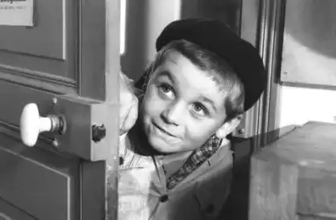
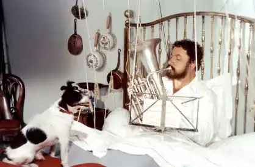

Filmo graphy
1967
La Guerre des Boutons

Like every year, at each return to school, the children of Longeverne quarrel with those of Velrans. This year will be different since Lebrac and his comrades have just had the idea of tearing off the buttons and suspenders of their enemies in order to have them beaten up by their parents and, themselves, fight completely naked and keep the buttons torn off. their enemies as war treasure in a hut.
1997
Alexandre le Bienheureux

Alexandre, a good-natured and nonchalant man, is a farmer on a French farm in Beauce. However, his daily life is directed by "the Great", his ambitious but tyrannical wife, who exhausts him by imposing an excessive list of tasks on him every day. Having suddenly become a widower, he experiences great relief and feels freed from his work: he decides to take the rest he deems deserved, in order to take the time to savor life.